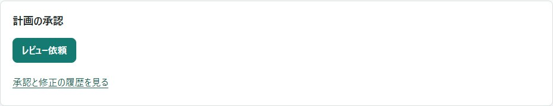
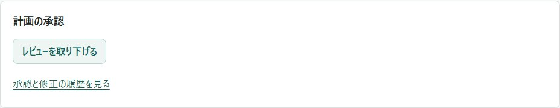
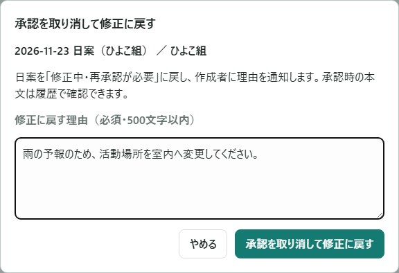
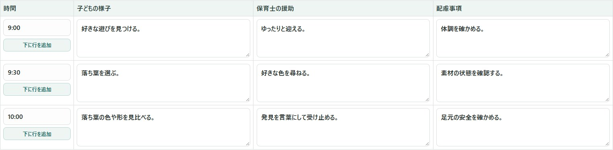
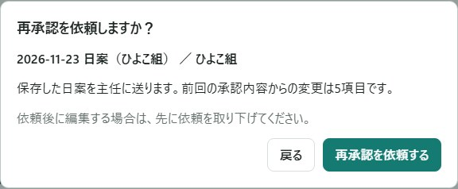
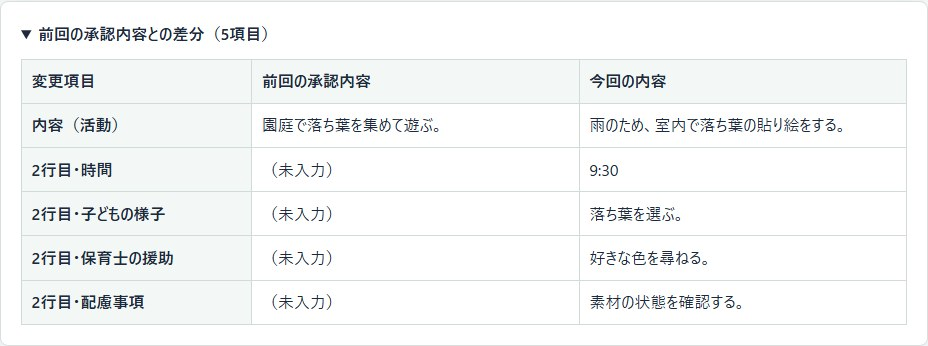
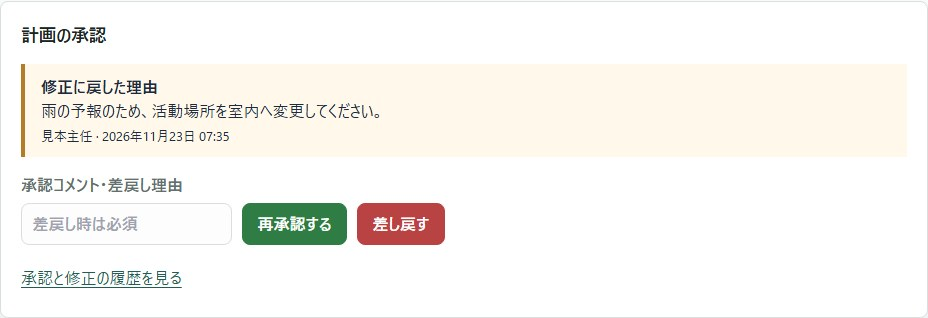
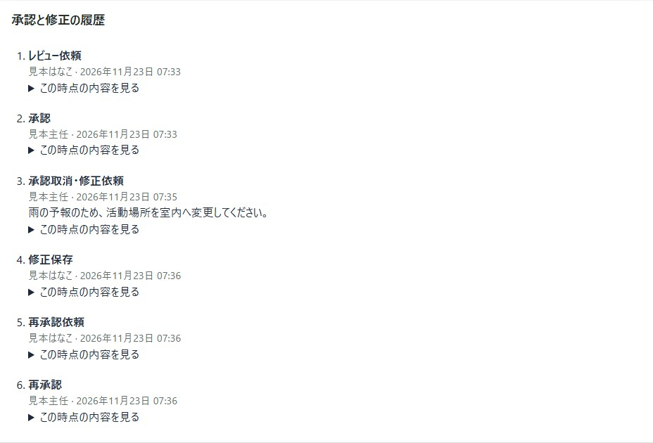

日案の計画を依頼・承認する、承認後に直す
日案の「計画の承認」を使います。担当職員が依頼し、承認権限のある主任・管理者が判断します。「その日の振り返り」の承認は別の操作です。
2026年11月23日に追加した手順です。画面は架空の職員・園児のデータで撮影しています。画像を押すと拡大できます。
1書いた計画のレビューを依頼する
日案を保存し、日付・クラス・本文を確かめます。「計画の承認」にある「レビュー依頼」を押します。依頼先がいない案内が出たら、園のアカウント担当者に確認してください。
承認前に直すときは「レビューを取り下げる」を押し、修正して保存してから、もう一度依頼します。主任は内容を読んで「承認」、直してほしいときは理由を書いて「差戻し」を押します。


2承認後に不備が見つかったら、主任が修正へ戻す
作成者は主任に修正を依頼します。主任は承認済み日案の「承認を取り消して修正に戻す」を開き、日案の日付・クラスを確かめます。
「修正に戻す理由」を500文字以内で書き、同名の確定ボタンを押します。理由は必須です。「やめる」で閉じただけなら状態は変わりません。
確定すると「修正中・再承認が必要」になり、作成者へ理由が通知されます。前の承認内容は履歴に残ります。

3作成者が修正を保存する
通知または日案を開き、修正理由を読みます。「修正」から本文や「1日の流れ」を書き直し、「修正を保存」を押します。行追加は保存後の行追加の手順を参照してください。
保存だけでは再承認の依頼は送られません。保存した内容と「前回の承認内容との差分」を確かめます。

4再承認を依頼する
「再承認を依頼」を開き、対象と変更項目を確かめて「再承認を依頼する」を押します。「戻る」では送信されません。
再承認待ちの内容を直すには、「再承認依頼を取り下げる」で修正中に戻します。取り下げても以前の承認済み状態には戻りません。保存・再依頼・再承認が必要です。

5主任が差分を読んで再承認する
主任は通知から同じ日案を開き、修正理由、今回の本文、「前回の承認内容との差分」を読みます。
問題がなければ「再承認する」、追加の修正が必要なら理由を書いて「差し戻す」を押します。


6承認結果と履歴を確かめる
「承認と修正の履歴を見る」から、最初の承認、取消理由、再依頼、再承認を確認できます。現在の状態が承認済みになったことを確かめます。
他の職員の更新により操作できない案内が出たら、入力を控えてから最新の画面を開き、状態と内容を確認してください。
